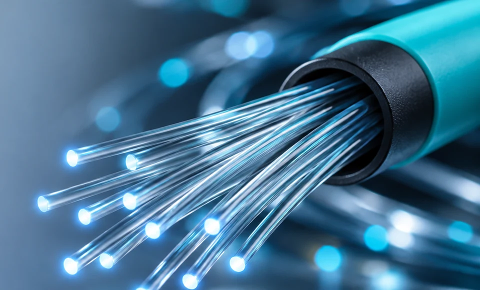
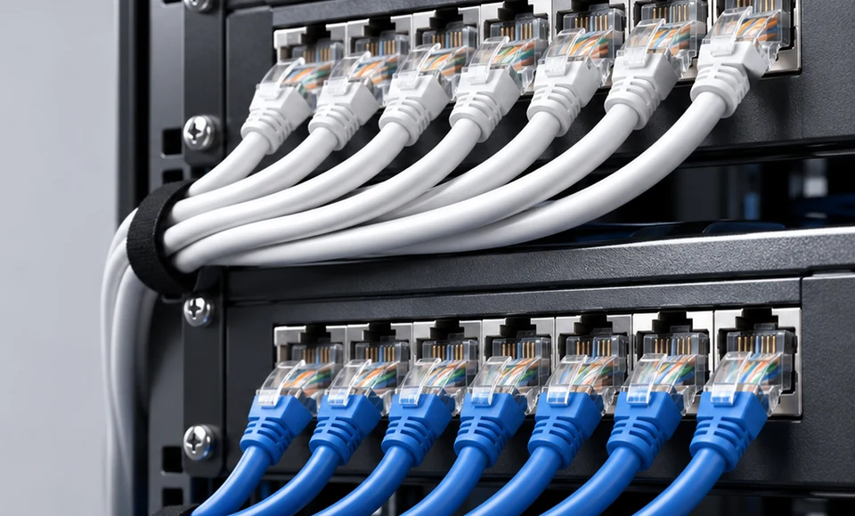

01 / SYSTEMS
Network systems
Secure, organised enclosures for today's connected environments.
Network cabinets, fibre distribution enclosures and cable organisation. Explore structured infrastructure through an integrated product family.
01 / BUILT FOR PERFORMANCE
Infrastructure designed around the network. From the first connection to systems that scale.
Explore product families↗01 / THE PRODUCT ECOSYSTEM
Every part of the network has a purpose. Explore the complete infrastructure, from connectivity to enclosure.
Secure, organised enclosures for today's connected environments.

02 / OPTICALReliable optical pathways for fast, scalable network links.

03 / CONNECTIVITYThe dependable physical layer beneath every digital connection.
No matching product families. Try a different search term.
02 / BUILT AROUND THE NETWORK
Thoughtfully designed infrastructure starts with the right foundation. Axiom brings product discovery and application guidance together in a clear, intuitive digital experience.
Explore our ecosystem →03 / AXIOM NETWORKS
AXIOM NETWORKS is a fictional infrastructure brand conceived to demonstrate a clear, product-led website experience, cinematic media sequencing and responsive user interfaces.
Return to portfolio ↗